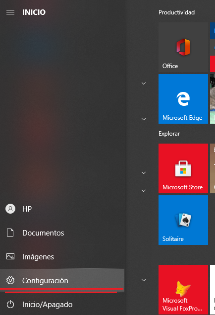

¿Qué es un DRIVER?
El driver o controlador de dispositivos en base son un pequeño software que conecta el sistema operativo directamente con los componentes del hardware de la PC como lo pueden ser puertos USB, tarjetas grafica, impresoras, teclados ,etc..-
¿Cómo saber que drive necesito?
Si el dispositivo es nuevo por lo general estos vienen con un pequeño CD mismo que trae el instalador del drive de dicho dispoditivo, pero si por alguna razon los drivers se desinstalan o formateaste el equipo debes conocer la marca y el modelo del copponente que vallas a añadir o que ya tengas añadio a tu computadora.
Poniendo el ejemplo de una impresora tenemos que saber la marca y el modelo de la misma, por lo general las impresoras tienenel modelo y la marca en la parte frontal de la misma.
Para encontrar los drivers de estos dispositivos basta con buscar en las paginas oficiales de estos mismos es bastanta facil instalarlos, vamos a descargar un archivo ejecutable al momento de descargar estos drivers.
¿Cómo instalar un drive?
Una ves descargado este archivo ejecutable lo vamos a ejecutar como administrador.
Saltara una ventana en la que hay que aceptar que el programa haga cambios en el equipo y se abrira el asistente de instalación.
Luego por lo general nos va a pedir que aceptemos terminos y condiciones le vamos a dar click en aceptar y continuaremos con el proceso de instalación.
Luego de esto empezara la descarga e instalacion de los drivers necesarios esto puede tardas varios minutos.
Empezara un oprceso de preparación de la instalacion y luego de esto procedera a instalarce.
Luego de esto daremos click en el boton finalizar y listo.
No al instalar todos los drivers van a haber los mismos asos pero por lo general estos son los pasos generales para la instalación de cualquier tipo de driver.
OTRO PROBLEMA CON LOS DRIVERS
Un problema bastante comúm conlos drivers esque estos dejen de funcionar porque estos estan desactualizados.
Windows tiene la opción de actulaizar estos periodicamente de manera automatica para evitar problemas, a continuación explicaremos cómo usar la opción de "Windoww Update".

¿Cómo entrar a Windows Update?
nos dirigiremos al boton de inicio y buscaremos la opcion de configuraciones.

nos dirigiremos al boton "Actualizacion y seguridad" .

Una vez demos click nos enviara a la ventana de Windows Update misma en la que podremos buscar las actiualizaciones y programar al progreama para que busque actualizacioes automaticamente cada que nosotros queramos.
Aquí configuraremos a nuestra conveniencia todas las opciones que nos da, usar Windows Update es bastante facil e intuitivo así que no sera muy difícil de que lo hagas correctamente.
Listo ya tienes instalado un driver